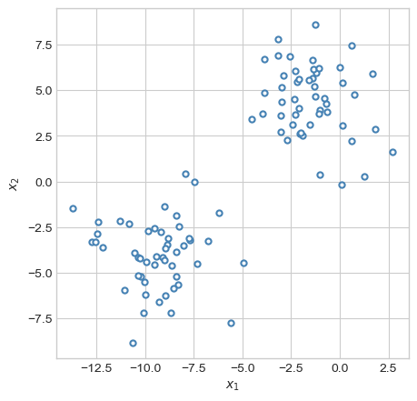
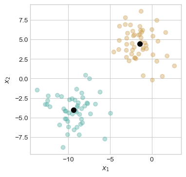
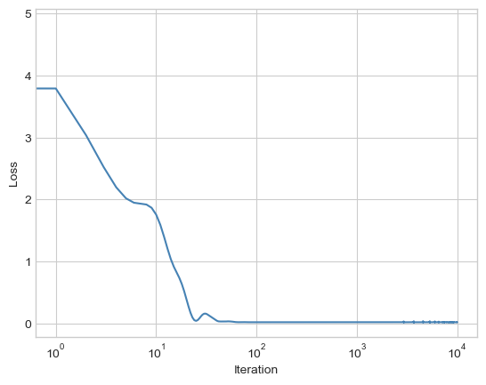
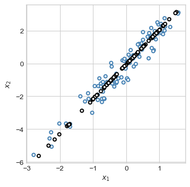
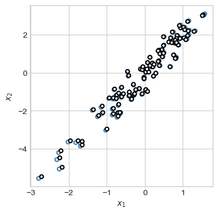
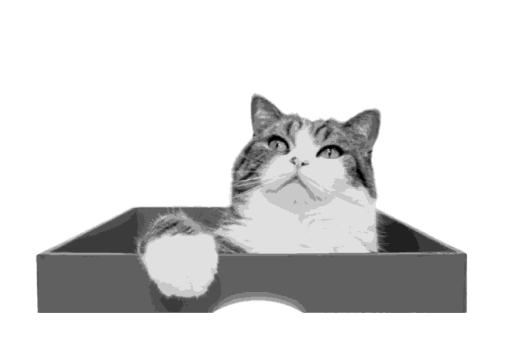
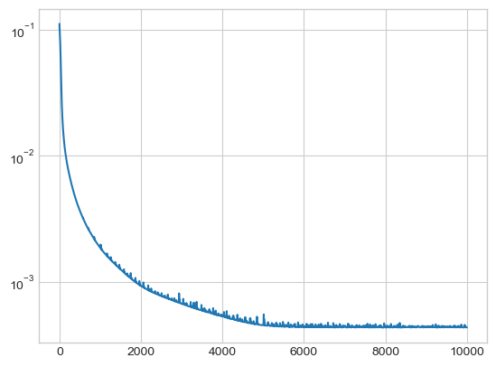
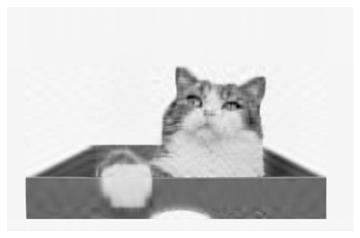

Code
import torch
import numpy as np
from matplotlib import pyplot as plt
from sklearn.datasets import make_moons, make_circles, make_blobs
plt.style.use('seaborn-v0_8-whitegrid')So far in these notes, we have focused almost exclusively on supervised learning. In this setting, we had a predictor matrix \(\mathbf{X} \in \mathbb{R}^{n \times p}\) and a target vector \(\mathbf{y} \in \mathbb{R}^n\). Our general goal was to learn patterns that would allow us to make predictions: given a new set of predictors \(\mathbf{x}\), we could compute a prediction \(\hat{y}\) that is hopefully “close” in some sense to the true label \(y\). As we saw, this supervised framework encompasses both classification and regression problems.
But what happens when there are no targets \(\mathbf{y}\)? Is it still possible to learn some interesting patterns in our data? Yes! Unsupervised learning is the name for the broad class of machine learning problems that ask us to “find some patterns in the data” without necessarily using a target variable to evaluate whether these patterns are “right” or “accurate.”
There are many kinds of unsupervised learning, and there is no single unifying framework that can capture all of them. For the purposes of these notes, we are going to focus on a particular paradigm for unsupervised learning that captures several important and useful examples. This is the framework of encoders and decoders.
Let \(\mathbf{X} \in \mathbb{R}^{n\times p}\) be our matrix of data. An encoder is a function \(\phi_e: \mathbf{x} \mapsto c_\mathbf{x}\), which associates to each data point \(\mathbf{x}\) a code \(c_{\mathbf{x}}\). This code is intended to contain some compressed information that could, in principle, be used to approximately reconstruct the data point. A decoder is a function which does the reconstruction: the decoder function \(\psi_d c_\mathbf{x} \mapsto \hat{\mathbf{x}} \in \mathbb{R}^n\) sends the code \(c_\mathbf{x}\) to a “reconstructed” vector \(\hat{\mathbf{x}}\). We aim for an encoder-decoder pair that “successfully” approximates the original data points, where “successful” depends on the purpose of our unsupervised learning application as well as various modeling choices.
In order to define the idea of the reconstructed data point \(\hat{\mathbf{x}}\) being close to the true data point \(\mathbf{x}\), we need to again define a loss function to measure closeness. Following our notation from supervised learning, we’ll denote the per-observation loss \(\ell: \mathbb{R}^n \times \mathbb{R}^n \rightarrow \mathbb{R}\). Note that, unlike in the supervized learning case, \(\ell\) is a function of pairs of vectors rather than pairs of scalars representing elements of the target vector.
So, given a data set, an encoder, a decoder, and a loss function, we can define the reconstruction loss of the encoder-decoder pair as
\[ \DeclareMathOperator*{\argmin}{argmin} \begin{aligned} \mathcal{L}(\phi_e, \psi_d) = \frac{1}{n} \sum_{i=1}^n \ell(\mathbf{x}_i, \psi_d(\phi_e(\mathbf{x}_i)))\;. \end{aligned} \]
An autoencoder is an unsupervised machine learning model which simultaneously learns an encoder-decoder pair by minimizing a loss function. Our goal in the encoder-decoder framework is to find good choices of the encoder \(\phi_e\) and the decoder \(\psi_d\).
We’ve intentionally been pretty vague about the nature of the code \(c\). There are many ways in which we can define this code, all of which depend on what kind of patterns we are aiming to learn from our data. Here are a few examples:
Suppose we are looking at data like this:
import torch
import numpy as np
from matplotlib import pyplot as plt
from sklearn.datasets import make_moons, make_circles, make_blobs
plt.style.use('seaborn-v0_8-whitegrid')X, y = make_blobs(n_samples=100, n_features=2,
centers=2, random_state=1, cluster_std=2.0)
X, y = torch.tensor(X), torch.tensor(y)
def plot_2d_data(X, y, ax, **kwargs):
if "edgecolor" not in kwargs:
kwargs["edgecolor"] = "steelblue"
ax.scatter(X[:,0].detach(), X[:,1].detach(), s = 20, facecolor = "white", linewidth = 1.5, **kwargs)
ax.set(xlabel = r"$x_1$", ylabel = r"$x_2$")
fig, ax = plt.subplots(1, 1, figsize=(5,5))
plot_2d_data(X, y, ax)
If asked to summarise this data in some way, you might reasonably suggest that the data is divided into two groups. If we wanted to know about an individual point, we could get a lot of information just by knowing which group it was in and where that group was located.
To represent this logic, et’s consider the following simple encoder-decoder pair. We’ll pick a number of centroids \(k < n\). Then, the encoder simply assigns an integer \(h = 1,\ldots,k\) to each data point: \[ \begin{aligned} \phi_e(\mathbf{x}_i) = h_i\;. \end{aligned} \]
The decoder assigns to each integer \(h = 1,\ldots,k\) a vector \(\boldsymbol{\mu}_h \in \mathbb{R}^n\): \(\psi_d(h) = \boldsymbol{\mu}_h\). We can think of each \(\boldsymbol{\mu}_h\), \(h = 1,\ldots,k\), as a “representative” data point. We treat \(\boldsymbol{\mu}_h\) as “representing” all of the data points \(\mathbf{x}\) for which \(\phi_e(\mathbf{x}) = h\). To measure the loss, we’ll set \(\ell\) to be the squared Euclidean distance:
\[ \begin{aligned} \ell(\mathbf{x}_i, \boldsymbol{\mu}_h) = \|\mathbf{x}_i - \boldsymbol{\mu}_h\|^2\;. \end{aligned} \]
The objective function for our encoder-decoder problem is then \[ \begin{aligned} \mathcal{L}(\phi_e, \psi_d) &= \frac{1}{n} \sum_{i=1}^n \|\mathbf{x}_i - \psi_d(\phi_e(\mathbf{x}_i))\|^2 \\ &= \frac{1}{n} \sum_{i=1}^n \|\mathbf{x}_i - \boldsymbol{\mu}_{\phi_e(\mathbf{x}_i)}\|^2 \\ &= \frac{1}{n} \sum_{i=1}^n \|\mathbf{x}_i - \boldsymbol{\mu}_{h_i}\|^2\;. \end{aligned} \]
This last expression is the objective function for the well-known k-means clustering problem. We have arrived at this algorithm through the somewhat unusual route of encoder-decoder pairs.
In the k-means algorithm, we aim to optimize both the centroids \(\boldsymbol{\mu}_h\), \(h = 1,\ldots,k\), and the assignments \(h_i\), \(i = 1,\ldots,n\). Unfortunately, although optimizing the centroids is a convex problem, optimizing the assignments is not. Worse yet, since the assignments are discrete, we can’t do gradient descent either! The k-means clustering problem is typically solved using a heuristic algorithm with very fast performance:
Until converged:
Here is an implementation of the k-means clustering algorithm. In the case of k-means, it is not too beneficial from an implementation perspective to explicitly represent the encoder and decoder as part of the code. This is because we can’t directly perform optimization on the encoder and decoder (due to the nondifferentiability of the encoder). Instead, we’ll use a direct implementation.
# implement the k-means step
# M is a matrix of centroids
# z is a vector of labels
def k_means_step(X, M, z):
# Step 1 of k-means: assign each point to the closest centroid
D = torch.cdist(X, M) # distances between points and centroids
z = torch.argmin(D, dim = 1) # each point's new centroid is the closest one
# Step 2 of k-means: update the centroids
# each centroid's new value is the mean of all the points in its group
for j in range(M.shape[0]):
ix = z == j
# if a centroid has any points assigned to it, update it
if ix.sum() > 0:
M[j,:] = X[ix].mean(dim = 0)
# otherwise, reinitialize the centroid with random numbers
else:
M[j,:] = torch.rand(M[j,:].shape, dtype = torch.float64)
return M, z
# main loop for k-means
def k_means(X, k = 2):
# initialization
n, p = X.size()
M = torch.rand(k, p, dtype = torch.float64) # initialize matrix of clusters
z_prev = torch.randint(k, (k, n)) # assignments of points to clusters
done = False
# main loop: take a step until labels stop updating
while not done:
M, z = k_means_step(X, M, z_prev)
done = torch.all(z_prev == z)
z_prev = z
# return centroid matrix and cluster labels
return M, zLet’s go ahead and run this algorithm:
M, z = k_means(X, 2)fig, ax = plt.subplots(1, figsize = (4, 4))
a = ax.scatter(X[:, 0], X[:, 1], c = z, alpha = 0.4, cmap = plt.cm.BrBG, vmin = -0.5, vmax = 1.5)
a = ax.set(xlabel = r"$x_1$", ylabel = r"$x_2$")
ax.scatter(M[:,0], M[:,1], s = 50, color = "black")
The two centroids are shown as black dots. The colors of the points indicate the centroid to which those points are assigned by the k-means clustering algorithm.
A few practical notes:
Let’s now suppose that, instead of approximating many data points with a smaller number of representative points, we instead want to approximate the many data features with a smaller number of representative features. Despite the apparent parallel to the problem above, this one is quite different. There are many approaches to this kind of problem, and we’ll focus on only one in these notes.
Let’s again use the encoder-decoder framework from above. This time, the function \(\phi_e\) is going to be a linear function:
\[ \begin{aligned} \phi_e(\mathbf{x}) = \mathbf{x}\mathbf{U}\;. \end{aligned} \]
Here, \(\mathbf{U} \in \mathbb{R}^{p \times k}\) is a matrix with \(k < p\) rows.
Similarly, the decoder function \(\psi_d\) will also be linear:
\[ \begin{aligned} \psi_d(\mathbf{c}) = \mathbf{c}\mathbf{V} \;. \end{aligned} \]
Here, the matrix \(\mathbf{V} \in \mathbb{R}^{k \times p}\).
Like last time, we’ll use the squared Euclidean distance between the input and the reconstructed input as our loss function:
\[ \begin{aligned} \ell(\mathbf{x}, \hat{\mathbf{x}}) &= \|\mathbf{x} - \hat{\mathbf{x}}\|_2^2\ \\ &= \|\mathbf{x} - \mathbf{c} \mathbf{V} \|_2^2 \\ &= \|\mathbf{x} - \mathbf{x}\mathbf{U} \mathbf{V} \|_2^2\;. \end{aligned} \]
The complete loss, summed across all observations, can be written
\[ \begin{aligned} \mathcal{L}(\mathbf{U}, \mathbf{V}) &= \sum_{i=1}^n \|\mathbf{x}_i - \mathbf{x}_i\mathbf{U} \mathbf{V} \|_2^2 \\ &\triangleq \|\mathbf{X} - \mathbf{X}\mathbf{U} \mathbf{V} \|_F^2\;. \end{aligned} \tag{19.1}\]
Here, \(\|\cdot\|_F\) is the Frobenius norm of a matrix, which is simply \(\|\mathbf{A}\|_F = \sqrt{\sum_{i=1}^n \sum_{j=1}^p a_{ij}^2}\) for a matrix \(\mathbf{A} \in \mathbb{R}^{n \times p}\).
Our problem of encoder-decoder learning is then simply to learn the matrices \(\mathbf{U}\) and \(\mathbf{V}\). We can code this up as a simple torch model:
import torch.nn as nn
class LinearAutoEncoder(nn.Module):
def __init__(self, input_dim, k):
super().__init__()
self.k = k
self.encoder = nn.Linear(input_dim, self.k, dtype = torch.float64)
self.decoder = nn.Linear(self.k, input_dim, dtype = torch.float64)
def forward(self, x):
return self.decoder(self.encoder(x))
def loss(self, x):
return torch.mean((self.forward(x) - x)**2)To illustrate, we’ll work on the following data set:
n_points = 100
x = torch.randn(n_points, dtype = torch.float64)
X = torch.zeros(n_points, 2)
X[:, 0] = x
X[:, 1] = 2*x + 0.5*torch.randn(n_points)
X = X.double()
fig, ax = plt.subplots(1, figsize = (4, 4))
plot_2d_data(X, torch.zeros(n_points), ax)Now we’ll instantiate and train our model. In this example, we’ll assume that \(k = 1\).
le = LinearAutoEncoder(input_dim = 2, k = 1)
# standard training loop for models implemented in torch
def train(X, model, lr = 0.1, n_iter = 1000):
opt = torch.optim.Adam(model.parameters(), lr = lr)
losses = []
for i in range(n_iter):
opt.zero_grad()
loss = model.loss(X)
losses.append(loss.item())
loss.backward()
opt.step()
return losses
losses = train(X, le, lr = 0.1, n_iter = 10000)Now let’s inspect the loss:
plt.plot(losses, color = "steelblue")
plt.semilogx()
labs = plt.gca().set(xlabel = "Iteration", ylabel = "Loss")
The loss quickly converged. We can take a look at the trained reconstruction of the data just using the forward method:
X_hat = le.forward(X) # reconstructed data pointsNow we can compare the original and reconstructed data:
fig, ax = plt.subplots(1, figsize = (4, 4))
plot_2d_data(X, torch.zeros(n_points), ax)
plot_2d_data(X_hat, torch.zeros(n_points), ax, edgecolor="black")
Because we required that the learned linear encoding have rank 1, the reconstruction is a 1-d subspace: a line.
What would happen if we allowed the encoder to have rank 2?
le = LinearAutoEncoder(input_dim = 2, k = 2)
losses = train(X, le, lr = 0.1, n_iter = 10000)
X_hat = le.forward(X)
fig, ax = plt.subplots(1, figsize = (4, 4))
plot_2d_data(X, torch.zeros(n_points), ax)
plot_2d_data(X_hat, torch.zeros(n_points), ax, edgecolor="black")
This experiment illustrates a very important general principle for learning with autoencoders: it is necessary for the encoder to map the data onto a space which is lower-dimensional than the domain of the original data itself. In this case, the encoder mapped the data from 2d space into 2d space, with the result that the autoencoder simply learned to memorize the data. It was only when we sent the 2d data into 1d feature space that the autoencoder was forced to learn more useful structure in the data.
One application of the encoder-decoder framework is image compression. In the image compression problem, we aim to represent an image using less information than the original. There are many ways to do image compression, and modern methods rely on very sophisticated algorithms. Here we’ll focus only on illustrating our two simple methods.
Let’s use the following image of Maru the cat.
import urllib.request
from PIL import Image
from matplotlib import pyplot as plt
import torch
import numpy as np
def read_image(url):
urllib.request.urlretrieve(url, "maru.png")
img = Image.open("maru.png")
return torch.tensor(np.array(img)/255).double()
url = "https://github.com/middlebury-csci-0451/CSCI-0451-s24/blob/main/assets/img/figs/maru.png?raw=true"
img = read_image(url)
def to_greyscale(im):
v = torch.tensor([0.2989, 0.5870, 0.1140])
return 1 - img[:,:,:3]@v.double()
img = to_greyscale(img)
def show(img):
plt.imshow(img.detach(), cmap = "Greys")
plt.axis("off")
show(img)
This image has size \(413 \times 640\), which means that representing it exactly requires \(413 \times 640 = 263,520\) floating point numbers to represent the greyscale values.
To apply \(k\)-means, we’ll treat each individual pixel as a data point. This requires us to reshape the image.
X = img.reshape(img.size(0)*img.size(1), 1)
X.size()torch.Size([264320, 1])Now we’ll run k-means:
M, z = k_means(X, 10)And visualize the result! The code below reconstructs the image, replacing the value at each pixel with the corresponding centroid learned in k-means.
X_hat = M[z].reshape(img.size(0), img.size(1), 1)
show(X_hat)
The resulting image is clearly of lower quality, but just 10 distinct greyscale values are sufficient to make out the main features. The cost of storing this reconstruction is lower than storing the original image. Instead of needing to store a floating point greyscale value at each pixel, we can instead simply store the label of the centroid. This means we need to store \(264320\) integers, and only \(10\) floating point numbers. If we know that we do not need many clusters, the cost of storing integers can be considerably lower than the cost of storing floats.
What if instead we want to reduce the dimension of the image? In this case, we treat each row of the image as a piece of data, and we don’t need to do any reshaping:
le = LinearAutoEncoder(input_dim = img.size(1), k = 20)
losses = train(img, le, lr = 0.001, n_iter = 10000)plt.plot(losses)
plt.semilogy()
How does the reconstructed image look?
img_hat = le.forward(img)
show(img_hat)
This is a very different kind of reconstruction. The coarse features are very visible, but most of the detail is missing and the image is quite blurry. On the other hand, the cost of storing this representation of the image is very low. The original image required \(263520\) floating point numbers to store. To store the compressed image, however, it is sufficient to store the encoded representation and the decoder weights.
le.encoder(img).numel() + le.decoder.weight.numel()21060This is a very different kind of reconstruction: the coarse features are visible, but most of the detail is missing and the image is quite blurry. On the other hand, the cost of storing this representation is very, very low.
Throughout these notes, I’ve been referring to the “linear autoencoder” model for representing data in a lower dimensional space. In fact, this model has a rich history in statistics and data analysis: it is Principal Component Analysis (PCA). PCA is not usually solved with gradient descent methods, but rather with special linear algebra techniques that make use of its relationship to the singular value decomposition (SVD). In addition to providing a much faster way to learn PCA than the gradient descent method that we’ve demonstrated here, SVD also makes it easy to use the singular values of the image in order to quantify the reconstruction loss.
You can learn much more about PCA and its relationship with SVD in these notes by James Worrell at Oxford.
© Phil Chodrow, 2025